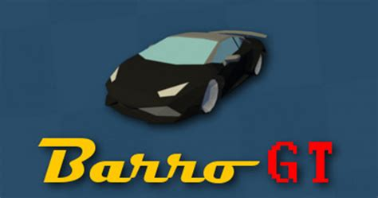
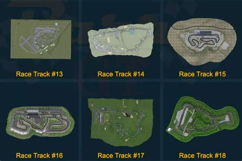
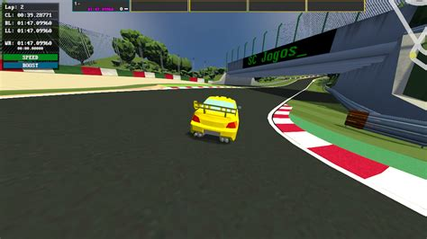

STEAM CLEAN REVIEW
Barro GT

7/10
A fun low-poly arcade racer that beautifully recreates some of the world's most famous race tracks.
Quick Facts
- Completed: 3rd October
- Hours Played Overall: 3 Hours
- Achievement Progress: 21/21 (100%)
- Steam Clean Size: QUICK
- Genre: Racing
Should You Play In 2026?
Barro GT is a straightforward arcade racer that invites you to enjoy some of the world's greatest racing circuits through clean low-poly visuals and a surprisingly relaxing atmosphere. It doesn't try to compete with the big-budget names in the genre. Instead, it focuses on delivering simple arcade racing that is easy to pick up and enjoy.
I had a genuinely good time with it. Zipping around iconic tracks while taking in the colourful visuals and laid-back presentation made it easy to settle into a rhythm. The AI can feel a little simplistic at times, but races become much more entertaining when you're caught in the middle of the pack. Opponents can be surprisingly aggressive, leading to plenty of bumps, spins and accidental PITT manoeuvres.
The driving feels great. The physics strike a nice balance between accessibility and control, making each track enjoyable to learn. One of my favourite features was the boost system. Because your boost only refreshes at the start of a lap, using it effectively becomes an important part of setting faster times. The collision physics also add a welcome layer of chaos. Watching cars launch into the air after an ill-timed impact never stopped being amusing.
Performance was flawless throughout my playtime. I didn't encounter any technical issues and the game ran smoothly from start to finish. Content-wise, the base game offers 21 tracks, which feels like a respectable amount for a budget racer. There is also DLC available for players who want a few extra circuits.
Would I recommend it in 2026? Yes. While a proper campaign mode would have helped give the game a stronger identity, and the identical car statistics limit strategic choices, Barro GT's charm is hard to deny. It's inexpensive, frequently discounted and delivers exactly what it promises: simple, enjoyable arcade racing on recognisable tracks from around the world.

What I Loved
- Great representations of famous real-world race tracks.
- Clean and charming low-poly visuals.
- An interesting boost system that rewards careful management.
- Hilarious ragdoll-style collision physics.
What Didn't Work
- A dedicated campaign mode would have given the game more personality and progression.
- All cars perform identically, making vehicle choice purely cosmetic.
Favourite Moment
The first time I accidentally PITTed another car and watched the physics completely lose their mind. The resulting collision was so ridiculous that I spent more time laughing than racing.
Favourite Boss / Character
N/A
Who Would Enjoy This?
Fans of arcade racers looking for a quick and affordable racing fix will likely enjoy Barro GT. It's also a good choice for achievement hunters, as achievements are awarded for completing tracks rather than requiring race wins. Players who enjoy learning circuits and shaving seconds off their lap times will also find plenty to like here.

Steam Clean Verdict
👍 GOOD
Barro GT won't be everyone's cup of tea, but its simple design, satisfying handling, recognisable tracks and wonderfully silly physics give it an undeniable charm. If you're after an inexpensive arcade racer that knows exactly what it wants to be, this is an easy recommendation.